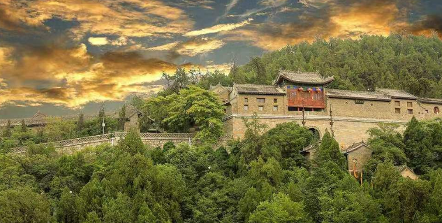

药王山

陕西铜川药王山是唐代医学家孙思邈隐居之地， 山峦形如五指，被称为药王山，是中国保存北朝 和隋唐造像碑最多的地方，被列为神奇西北100 景之一。
药王山位于陕西省铜川市耀州区城东1.5公里处， 是唐代著名医学家孙思邈长期隐居之处，因民间 尊奉孙思邈为药王而得名。
药王山本名五台山，由五座山峦组成，山峦顶平 如台，形如五指，俗称五指山。为纪念医学大师 孙思邈，改称药王山。
药王山是中国保存北朝和隋唐造像碑最多的地 方，1961年公布为全国文物重点保护单位，中国 西北旅游营销大会暨旅游装备展上入围神奇西北 100景榜单。
Z&x: 药王山有南庵、北洞、碑林、摩崖造像四大景区50余个景点，现存金、元、明、清古建筑165间，北朝以来摩崖造像45尊，历代碑刻及石塔300余座，明清石、木牌坊13座[22]。石刻遍布全山，丰富多彩，是中国保存北朝和隋唐造像碑最多的地方。1961年公布为第一批全国重点文物保护单位[22]。2018入围“神奇西北100景”榜单。[1]中国近代著名革命家、书法家及诗人于右任、建筑大师梁思成、林徽因夫妇曾来到药王庙，对药王山建筑、石刻艺术给予肯定 Z&x: 药王山，岩石多为优质石灰岩，并有海生动物腹足类、腕足类化石。其中被称作磬玉的青石，是高级石雕和建筑材料，亦是制造高标号水泥的理想原料。今药王大殿《饮中八仙歌》碑，扪之似玉，扣之如磬，即为磬玉雕制。《类编长安志·土产》云：“华原产芍药、赤石脂、瓷器、华原石。”华原石即磬玉。[4] 山上现有林地面积800余亩，古柏万余株，为耀县最大侧柏林基地。野生中药材也很丰富，计有104科、229种，占全县药材种类70%以上。如今，药王山林海苍茫，遍地药香，幽谷寂静，风光怡人。 解放后，因水泥和采石工业不断发展，总面积已缩小到东至孙塬乡石料厂前洞，西至耀县水泥厂粘土矿二采区，南至新耀水泥厂沟底南沿，北至农耕路畔，总面积为1.23平方公里。[4]
药王山，岩石多为优质石灰岩，并有海生动物腹足类、腕足类化石。其中被称作磬玉的青石，是高级石雕和建筑材料，亦是制造高标号水泥的理想原料。今药王大殿《饮中八仙歌》碑，扪之似玉，扣之如磬，即为磬玉雕制。《类编长安志·土产》云：“华原产芍药、赤石脂、瓷器、华原石。”华原石即磬玉。[4] 山上现有林地面积800余亩，古柏万余株，为耀县最大侧柏林基地。野生中药材也很丰富，计有104科、229种，占全县药材种类70%以上。如今，药王山林海苍茫，遍地药香，幽谷寂静，风光怡人。